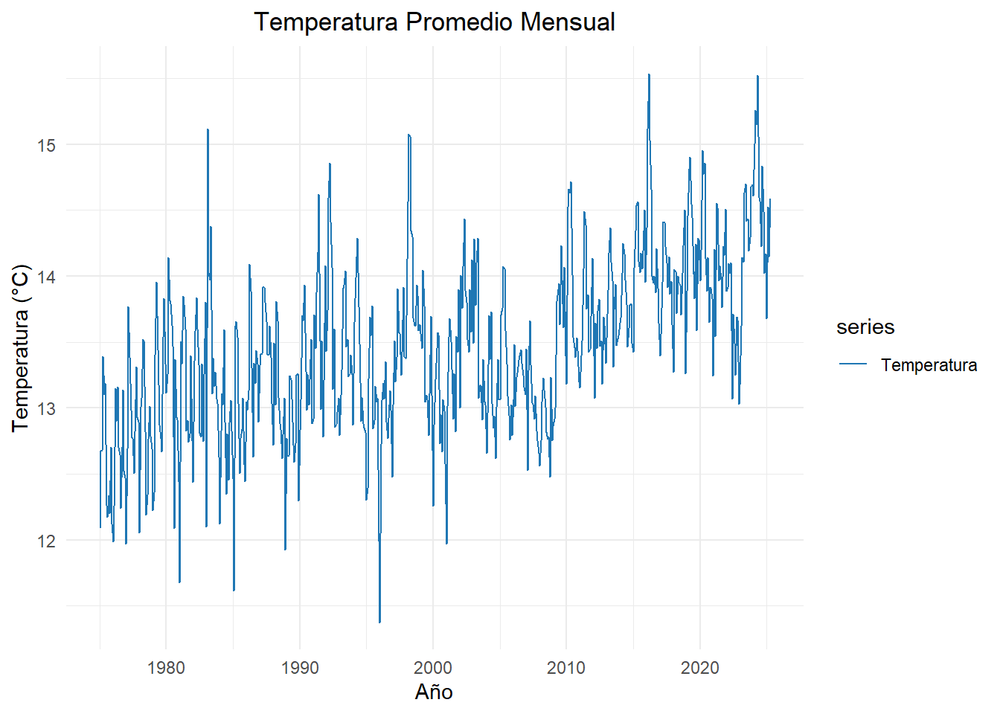

Capítulo: 5 Metodología Box Jenkins
Christian Vera, Yuli Deaquiz y Juan Rodríguez
18/05/2025
La metodología Box-Jenkins es una herramienta muy útil cuando queremos entender y predecir el comportamiento de una serie de datos a lo largo del tiempo. Se basa en modelos ARIMA, que permiten analizar si hay patrones repetitivos, tendencias o comportamientos aleatorios en los datos. El proceso consiste en tres pasos,identificar el tipo de modelo que mejor se ajusta, estimar sus parámetros y luego revisar si los errores del modelo (los residuos) no tienen patrones, es decir, que sean impredecibles.
En este caso, vamos a aplicar esta metodología a la temperatura promedio mensual de Bogotá desde 1975. Aunque el clima de la ciudad tiende a ser bastante estable por su ubicación y altitud, los datos históricos pueden mostrar cambios sutiles o incluso señales del cambio climático. Con esta técnica, podemos ver cómo ha cambiado la temperatura a lo largo del tiempo y hacer pronósticos que podrían ser útiles para temas como la agricultura, la salud o la planificación urbana.
Code
5.1 Cargar y preparar datos
Code
# Cargar datos
url <- "https://raw.githubusercontent.com/christianveram/Series_de_tiempo/refs/heads/main/bases/temperaturas_final.csv"
datos <- read.csv(url)
datos$time <- as.Date(datos$time)
# Filtrar desde 1975 y redondear tavg
datos_filtrados <- datos %>%
mutate(fecha = as.Date(time),
tavg = round(tavg, 2)) %>%
filter(fecha >= as.Date("1975-01-01")) %>%
arrange(fecha)5.3 Transformación a serie temporal mensual
En primer lugar, se agrupan los datos por mes y se calcula el promedio mensual de temperatura (tavg). Luego, se crea una serie temporal (ts_mensual) con esos valores, indicando que comienza en enero de 1975 y tiene una frecuencia mensual.
Code
datos_mensual <- datos_filtrados %>%
mutate(mes = floor_date(fecha, "month")) %>%
group_by(mes) %>%
summarise(tavg = mean(tavg, na.rm = TRUE))
ts_mensual <- ts(datos_mensual$tavg, start = c(1975, 1), frequency = 12)
autoplot(ts_mensual, series = "Temperatura") +
ggtitle("Temperatura Promedio Mensual") +
ylab("Temperatura (°C)") +
xlab("Año") +
theme_minimal() +
scale_color_manual(values = c("Temperatura" = "#1F77B4"))+
theme(plot.title = element_text(hjust = 0.5))
Figura 5.2. Temperarura promedio mensual de 1975 a 2020.
5.4 Prueba de Estacionariedad (ADF)
La prueba de Dickey-Fuller aumentada (ADF) es una prueba estadística que se utiliza para determinar si una serie temporal es estacionaria, es decir, si sus propiedades estadísticas como la media y la varianza se mantienen constantes en el tiempo. En esta prueba, la hipótesis nula (H₀) establece que la serie no es estacionaria, mientras que la hipótesis alternativa (H₁) afirma que sí lo es. En el resultado obtenido, el valor del estadístico fue -14.5464 y el valor-p fue 0.01, lo que significa que se rechaza la hipótesis nula al nivel de significancia del 5%. Por lo tanto, se concluye que la serie de temperatura promedio (tavg) es estacionaria y puede ser utilizada en modelos que requieren esta condición, como los modelos ARIMA.
Code
## Prueba de Dickey-Fuller
# Prueba de Dickey-Fuller
# Ho: La serie no presenta estacionariedad
# Ha: La serie presenta estacionariedad
# Ejecutar la prueba Dickey-Fuller
library(tseries)
library(knitr)
library(kableExtra)
# Ejecutar la prueba
adf_result <- adf.test(datos_filtrados$tavg)
# Crear tabla de resultados
adf_table <- data.frame(
"Test Statistic" = round(adf_result$statistic, 4),
"Lag Order" = adf_result$parameter,
"p-value" = round(adf_result$p.value, 4),
"Alternative" = as.character(adf_result$alternative),
check.names = FALSE
)
# Mostrar tabla con kableExtra
kable(adf_table, align = "c") %>%
kable_styling(
bootstrap_options = c("striped", "hover", "condensed", "responsive"),
full_width = FALSE,
position = "center")| Test Statistic | Lag Order | p-value | Alternative | |
|---|---|---|---|---|
| Dickey-Fuller | -14.5464 | 26 | 0.01 | stationary |
5.5 Prueba KPSS
La prueba KPSS es una prueba estadística utilizada para evaluar si una serie temporal es estacionaria en nivel. A diferencia de la prueba ADF, en la KPSS la hipótesis nula (H₀) establece que la serie es estacionaria, mientras que la hipótesis alternativa (H₁) plantea que no es estacionaria. En el resultado mostrado, el estadístico KPSS fue 34.079 con un valor-p de 0.01. Como el valor-p es menor a 0.05, se rechaza la hipótesis nula, lo que indica que la serie de temperatura promedio (tavg) no es estacionaria según esta prueba. Este resultado contradice la prueba ADF, por lo cual es pertinente realizar una diferenciación para confirmar el supuesto de estacionariedad del modelo ARIMA.
Code
# Prueba KPSS
# Ho: La serie es estacionaria
# Ha: La serie no es estacionaria
library(tseries)
library(knitr)
library(kableExtra)
kpss_result <- kpss.test(datos_filtrados$tavg)
# Crear tabla de resultados
kpss_table <- data.frame(
"KPSS Statistic" = round(kpss_result$statistic, 3),
"Truncation Lag Parameter" = kpss_result$parameter,
"p-value" = round(kpss_result$p.value, 4),
check.names = FALSE
)
# Mostrar tabla con numeración automática
kable(kpss_table, align = "c") %>%
kable_styling(
bootstrap_options = c("striped", "hover", "condensed", "responsive"),
full_width = FALSE,
position = "center"
)| KPSS Statistic | Truncation Lag Parameter | p-value | |
|---|---|---|---|
| KPSS Level | 34.079 | 14 | 0.01 |
5.6 Diferenciación.
Se aplica una primera diferencia a la serie temporal mensual de temperatura promedio con el objetivo de eliminar tendencias y hacerla estacionaria, es decir, que sus propiedades estadísticas no cambien con el tiempo. Luego, se vuelve a realizar las dos pruebas sobre la serie diferenciada. Los resultados muestran que en la prueba ADF el valor-p es 0.01, lo que lleva a rechazar la hipótesis nula y concluir que la serie diferenciada es estacionaria. Por su parte, en la prueba KPSS el valor-p es 0.1, por lo que no se rechaza la hipótesis nula y se concluye que la serie es estacionaria, lo cual es adecuado para el modelo ARIMA que requiere esta propiedad.
Code
#Primera diferencia
ts_diff1 <- diff(ts_mensual)
### Nuevas pruebas
adf_diff <- adf.test(ts_diff1)
kpss_diff <- kpss.test(ts_diff1)
### Tabla ADF sobre primera diferencia
adf_table <- tibble(
Estadístico_ADF = round(adf_diff$statistic, 4),
Valor_P = round(adf_diff$p.value, 4),
Hipótesis_nula = "La serie NO es estacionaria",
Decisión = ifelse(adf_diff$p.value < 0.05,
"Rechazada: la serie ES estacionaria",
"No rechazada: la serie NO es estacionaria")
)
# Mostrar tabla con kableExtra Prueba ADF
kable(adf_table, align = "c") %>%
kable_styling(
bootstrap_options = c("striped", "hover", "condensed", "responsive"),
full_width = FALSE,
position = "center")| Estadístico_ADF | Valor_P | Hipótesis_nula | Decisión |
|---|---|---|---|
| -14.3295 | 0.01 | La serie NO es estacionaria | Rechazada: la serie ES estacionaria |
Code
# Tabla KPSS sobre primera diferencia
kpss_table <- tibble(
Estadístico_KPSS = round(kpss_diff$statistic, 4),
Valor_P = kpss_diff$p.value,
Hipótesis_nula = "La serie ES estacionaria",
Decisión = ifelse(kpss_diff$p.value < 0.05,
"Rechazada: la serie NO es estacionaria",
"No rechazada: la serie ES estacionaria")
)
# Mostrar tabla con kableExtra Prueba KPSS
kable(kpss_table, align = "c") %>%
kable_styling(
bootstrap_options = c("striped", "hover", "condensed", "responsive"),
full_width = FALSE,
position = "center")| Estadístico_KPSS | Valor_P | Hipótesis_nula | Decisión |
|---|---|---|---|
| 0.0098 | 0.1 | La serie ES estacionaria | No rechazada: la serie ES estacionaria |
5.7 ACF y PACF
Code
library(ggplot2)
library(forecast)
library(patchwork)
p1 <- ggAcf(ts_diff1) +
theme_minimal() +
ggtitle("ACF de la serie diferenciada") +
theme(plot.title = element_text(hjust = 0.5))
p2 <- ggPacf(ts_diff1) +
theme_minimal() +
ggtitle("PACF de la serie diferenciada") +
theme(plot.title = element_text(hjust = 0.5))
p1 + p2 + plot_layout(widths = c(1.5, 1.5))
Figura 5.3. Pruebas ACF y PACF para la serie diferenciada.
Los gráficos muestran el análisis de la autocorrelación (ACF) y la autocorrelación parcial (PACF) de la serie temporal después de aplicar la primera diferencia, lo cual ayuda a identificar la estructura de dependencia entre los valores en diferentes rezagos (lags). A continuación se presentan los aspectos mas relevantes de cada uno:
ACF:, observamos que la mayoría de los valores caen dentro de las bandas de confianza (líneas azules), lo que indica que no hay una autocorrelación significativa persistente. Esto sugiere que la serie ya no tiene una tendencia clara ni patrones de dependencia fuertes después de ser diferenciada.
PACF: se observan algunos picos significativos en los primeros rezagos, pero también la mayoría están dentro de las bandas de confianza. Esto puede indicar que hay ciertas relaciones directas entre la serie actual y algunos rezagos específicos, pero en general, la estructura de dependencia ha disminuido.
5.8 Ajuste del modelo ARIMA.
Se utiliza la función auto.arima del paquete forecast para ajustar automáticamente un modelo ARIMA, buscando los valores óptimos de tres parámetros principales: p (el orden de la parte autorregresiva), d (el número de diferencias necesarias para que la serie sea estacionaria) y q (el orden de la media móvil). Además, si la serie temporal presenta estacionalidad, la función también ajusta los parámetros estacionales correspondientes: P, D y Q, que representan patrones repetitivos en intervalos específicos, como meses o trimestres.
Code
## Series: ts_mensual
## ARIMA(2,1,1)(2,0,0)[12]
##
## Coefficients:
## ar1 ar2 ma1 sar1 sar2
## 0.4517 0.2583 -0.9884 0.3165 0.2267
## s.e. 0.0406 0.0424 0.0059 0.0404 0.0419
##
## sigma^2 = 0.1513: log likelihood = -285.82
## AIC=583.65 AICc=583.79 BIC=610.06
##
## Training set error measures:
## ME RMSE MAE MPE MAPE MASE
## Training set 0.02932352 0.387005 0.2941109 0.1413283 2.187546 0.6344701
## ACF1
## Training set -0.02793378El modelo ajustado a la serie ts_mensual fue un ARIMA(2,1,1)(2,0,0)[12], lo que significa que se aplicó una diferenciación no estacional de orden 1 (d = 1) para estabilizar la media de la serie, junto con dos términos autorregresivos (p = 2) y uno de media móvil (q = 1). Además, se incluyeron componentes estacionales autorregresivos (P = 2) sin diferenciación estacional (D = 0) ni términos de media móvil estacional (Q = 0), con una periodicidad de 12, lo que indica que se trata de datos mensuales. Los coeficientes estimados para cada parámetro son estadísticamente significativos, como lo sugieren sus errores estándar relativamente bajos. Esto indica que los componentes del modelo capturan adecuadamente la estructura temporal de la serie.
En cuanto a la calidad del modelo, la varianza del error fue de 0.1513, lo que indica que los errores de predicción no son muy grandes.Por otro lado, las métricas de error como el RMSE (0.387) y el MAPE (2.19%) muestran que el modelo predice con buena precisión. Finalmente, la autocorrelación del residuo en el primer rezago es muy cercana a cero (-0.028), lo que sugiere que no quedan patrones importantes sin capturar, confirmando que el modelo se ajusta bien a la serie temporal.
5.9 Diagnóstico del modelo
5.9.1 Supuesto de normalidad
Code
##
## Shapiro-Wilk normality test
##
## data: resid(modelo)
## W = 0.98342, p-value = 2.323e-06De acuerdo al test de shapiro Wilk con un p valor de 2.323e-06 se rechaza la Hiótesis nula lo que indica que los residuales no presentan una distribución normal.

##
## Ljung-Box test
##
## data: Residuals from ARIMA(2,1,1)(2,0,0)[12]
## Q* = 43.727, df = 19, p-value = 0.00103
##
## Model df: 5. Total lags used: 24Figura 5.4 Modelo ARIMA para la temperatura promedio de la ciudad de Bogotá DC.
El test de Ljung-Box aplicado a los residuos del modelo ARIMA(2,1,1)(2,0,0)[12] tiene un p-valor de 0.00103, lo cual indica que hay evidencia de autocorrelación en los residuos. En otras palabras, el modelo no logra capturar completamente toda la estructura temporal de la serie, ya que los residuos aún muestran patrones.
Adicionalmente, el gráfico muestra los residuos del modelo ARIMA(2,1,1)(2,0,0)[12],permitiendo evaluar si estos se comportan como ruido blanco, es decir, si no presentan patrones visibles. Aunque visualmente los residuos parecen centrarse en torno a cero y distribuidos de forma aproximadamente normal, el gráfico de autocorrelación (ACF) revela que hay varios rezagos que exceden los límites de significancia, lo cual confirma la presencia de autocorrelación presentada en el test Ljung-Box.
5.10 Pronóstico
A continuación se presenta el pronóstico con base en el modelo ARIMA(2,1,1)(2,0,0)[12] ajustado a la serie de temperatura mensual. El gráfico muestra la proyección para los próximos 12 meses, incluyendo tanto los valores estimados como los intervalos de confianza que muestran la incentidumbre presentada en cada predicción.
Code
Figura 5.5 Pronóstico de temperatura promedio con el modelo ARIMA.